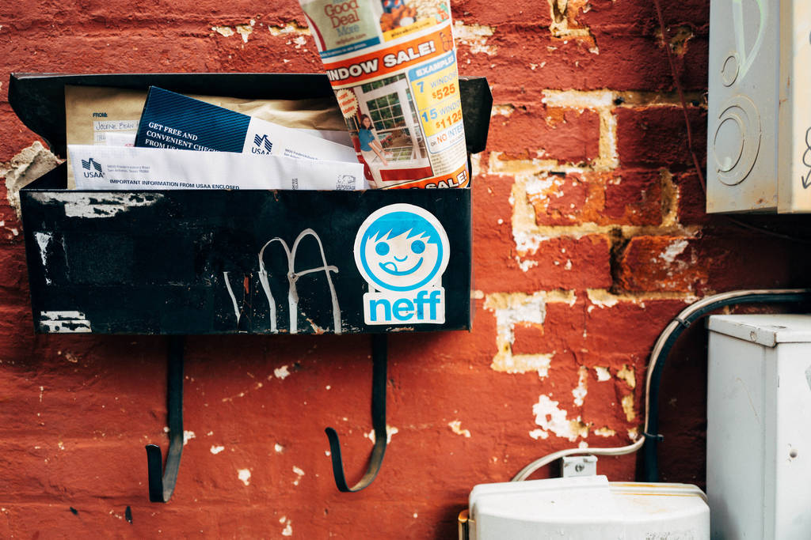

HTML Scraping¶
Web Scraping¶
Web sites are written using HTML, which means that each web page is a structured document. Sometimes it would be great to obtain some data from them and preserve the structure while we’re at it. Web sites don’t always provide their data in comfortable formats such as CSV or JSON.
This is where web scraping comes in. Web scraping is the practice of using a computer program to sift through a web page and gather the data that you need in a format most useful to you while at the same time preserving the structure of the data.
lxml and Requests¶
lxml is a pretty extensive library written for parsing
XML and HTML documents very quickly, even handling messed up tags in the
process. We will also be using the
Requests module instead of the
already built-in urllib2 module due to improvements in speed and readability.
You can easily install both using pip install lxml and
pip install requests.
Let’s start with the imports:
from lxml import html
import requests
Next we will use requests.get to retrieve the web page with our data,
parse it using the html module, and save the results in tree:
page = requests.get('http://econpy.pythonanywhere.com/ex/001.html')
tree = html.fromstring(page.content)
(We need to use page.content rather than page.text because
html.fromstring implicitly expects bytes as input.)
tree now contains the whole HTML file in a nice tree structure which
we can go over two different ways: XPath and CSSSelect. In this example, we
will focus on the former.
XPath is a way of locating information in structured documents such as HTML or XML documents. A good introduction to XPath is on W3Schools .
There are also various tools for obtaining the XPath of elements such as FireBug for Firefox or the Chrome Inspector. If you’re using Chrome, you can right click an element, choose ‘Inspect element’, highlight the code, right click again, and choose ‘Copy XPath’.
After a quick analysis, we see that in our page the data is contained in two elements – one is a div with title ‘buyer-name’ and the other is a span with class ‘item-price’:
<div title="buyer-name">Carson Busses</div>
<span class="item-price">$29.95</span>
Knowing this we can create the correct XPath query and use the lxml
xpath function like this:
#This will create a list of buyers:
buyers = tree.xpath('//div[@title="buyer-name"]/text()')
#This will create a list of prices
prices = tree.xpath('//span[@class="item-price"]/text()')
Let’s see what we got exactly:
print('Buyers: ', buyers)
print('Prices: ', prices)
Buyers: ['Carson Busses', 'Earl E. Byrd', 'Patty Cakes',
'Derri Anne Connecticut', 'Moe Dess', 'Leda Doggslife', 'Dan Druff',
'Al Fresco', 'Ido Hoe', 'Howie Kisses', 'Len Lease', 'Phil Meup',
'Ira Pent', 'Ben D. Rules', 'Ave Sectomy', 'Gary Shattire',
'Bobbi Soks', 'Sheila Takya', 'Rose Tattoo', 'Moe Tell']
Prices: ['$29.95', '$8.37', '$15.26', '$19.25', '$19.25',
'$13.99', '$31.57', '$8.49', '$14.47', '$15.86', '$11.11',
'$15.98', '$16.27', '$7.50', '$50.85', '$14.26', '$5.68',
'$15.00', '$114.07', '$10.09']
Congratulations! We have successfully scraped all the data we wanted from a web page using lxml and Requests. We have it stored in memory as two lists. Now we can do all sorts of cool stuff with it: we can analyze it using Python or we can save it to a file and share it with the world.
Some more cool ideas to think about are modifying this script to iterate through the rest of the pages of this example dataset, or rewriting this application to use threads for improved speed.